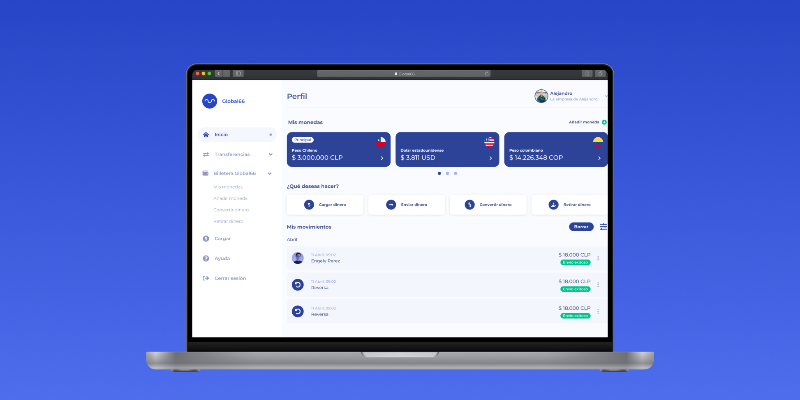
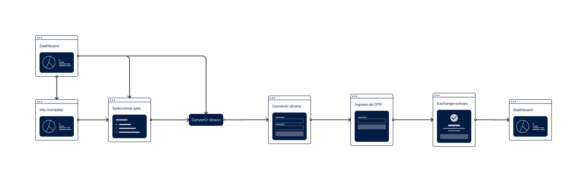
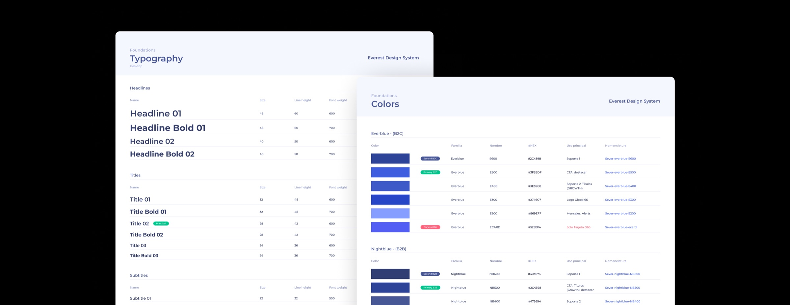
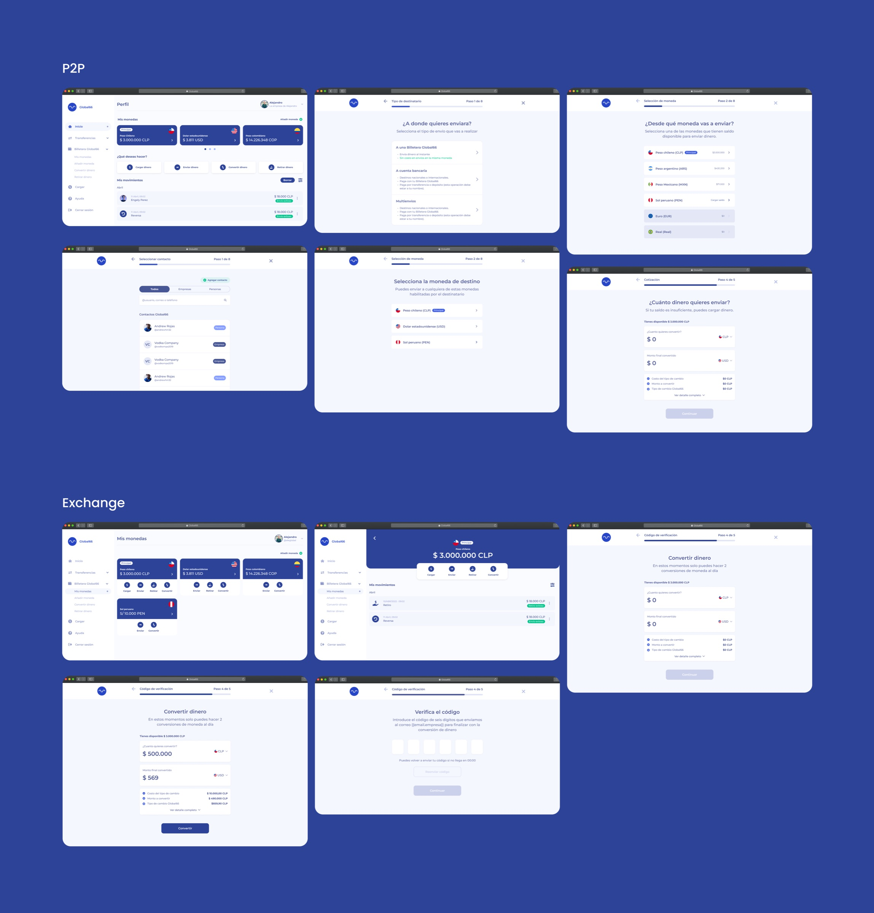

One financial platform for growing companies.
Co-creating a B2B experience that helps companies manage their money and make transfers and currency exchanges, both locally and internationally.

The challenge was to bring the simplicity of Global66’s consumer product into a more demanding business context—without losing clarity or trust.
- Client
- Global66
- Role
- UX Designer
- Platform
- Responsive web
- Focus
- B2B finance
01 · Challenge
Moving from consumers to companies
After the success of Global66’s consumer app, the business wanted to serve companies with a similar promise: send and receive money simply, quickly, and at a competitive fee.
Business customers required more information during registration, stronger legal validation, and workflows capable of handling larger transactions. Existing data also showed that more than 95% of business users sending money did so from a computer, making a desktop-first experience essential.
02 · Structure
Architecture before interface
We first defined the information architecture: which sections the platform needed and how they should be organized. A tree test with users, supported by UX Research, helped establish a clearer structure.
Once the main capabilities were defined, we mapped a user flow for each one and reviewed them with stakeholders. That gave us a broader view of the happy paths, business rules, edge cases, and error states.

03 · Design
Prioritizing a large product
The platform was too broad to design all at once. We prioritized login and the extensive sign-up flow, followed by adding and sending money, withdrawals, and finally currency exchange.
Global66 already had a consumer UI kit, so we could reuse and adapt existing components instead of starting from scratch. This accelerated high-fidelity design while keeping the new B2B product consistent with the brand.

04 · Validation
Testing value, not only usability
With the happy paths and key use cases in place, we created an iterative testing plan. The goal was to understand whether people could complete each task, whether the product delivered value, and where the experience still needed improvement.
Close collaboration with UX Research helped identify missing elements, refine individual workflows, and outline opportunities for future versions of the platform.
